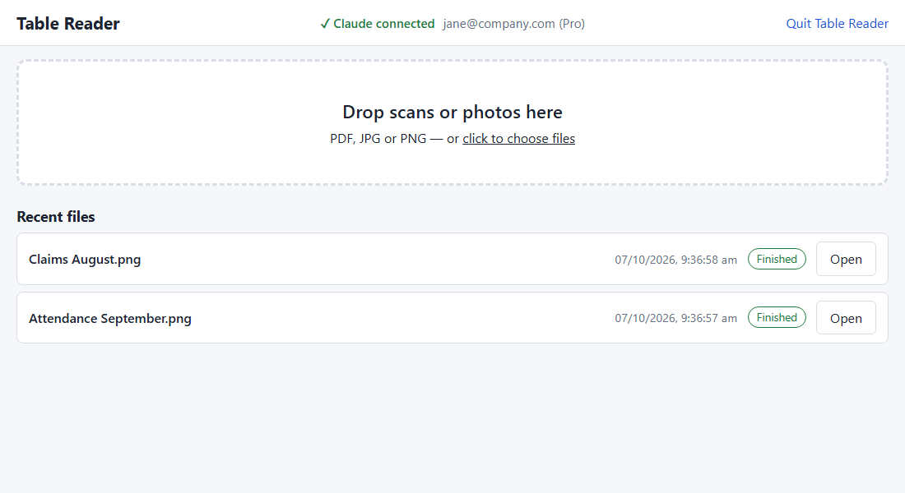
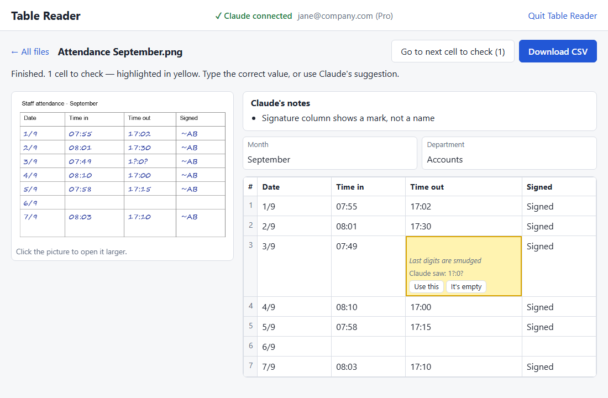

Turn a scan or photo of a table into a spreadsheet (CSV) you can open in Excel.
Double-click Table Reader on your desktop. The first time, press Sign in (top of the page) and finish signing in to your Claude account in the browser window that opens.
Drag your PDF, JPG or PNG files onto the box, or click it to choose them. You can add several at once.

Each page takes about 15 seconds to 1 minute. The page shows “Reading page 2 of 5…”. You can keep working and add more files.
Changed your mind? Press Cancel reading. Pages already read are kept, and Continue reading picks up where it stopped.
If it stops because your Claude plan is used up for now, wait until it resets, then press Continue reading.
Everything stays on this computer in Documents → Table Reader. Recent files are listed on the start page.
The original page is on the left and the table on the right. Table Reader never guesses: when it is not sure about a cell, it leaves the cell empty and turns it yellow, with the reason and what it saw.

Press Download CSV. Open the file in Excel. Your corrections are included. Any yellow cell you did not fix is left blank in the CSV and explained in the Notes column, so nothing uncertain looks certain. Each form field (such as Name or Month) is repeated on every row, and a Page column shows which page a row came from.